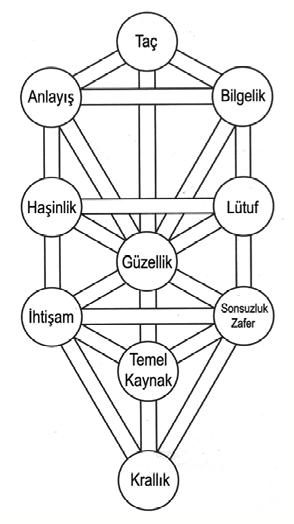

5. Bölüm: Yaşam Ağacı
Astroloji güneş sistemimizin ve gökadamızın enerjilerinin haritasını çıkarırken Kabala tüm yaratılışı- fiziksel, astral (yıldızlarla ilgili) ve onların ötesinde yatan her şeyi- araştırır. Yaşam Ağacı, Kabalanın gizemsel bahçesinin merkezinde yetişir ve onun her an hazır gücünü, yaşamlarını iyileştirmek ve Tanrının yakınına tırmanmak üzere kullanan kozmik gezginler için spiritüel düzenleyici olarak çalışır. Kabala bize, kendimizi ilahi gücü yeryüzüne taşıyacak kablolara dönüştürmeyi ve Yaşam Ağacının enerjik büyüsünü kullanarak yukardaki ile aşağıdaki arasında köprü kurmayı öğretir.
Yaşam Ağacı on arketip enerji küresinden, ibranice Sefirot, oluşur. Bu kürelerin sadece birisi bizim gördüğümüz, dokunduğumuz, işittiğimiz, kokladığımız ve tattığımız fiziksel varoluşu simgeler. Diğer dokuz küre, bizim maddi dünyamızın ötesinde yankılanan yaratılışın göksel gizemlerine, bir çeşit “karanlık madde”ye işaret eder.
Yaşam Ağacı, tarih boyunca bir antik simge olarak kalmıştır ve hâlâ değişik ırklar ve kültürler tarafından kullanılmaktadır. insanlar her yerde ve binlerce yıl ağaçları bir spiritüel destek kaynağı olarak kutsamışlardır. Şamanlarının ağaç tepelerinde gebe kaldığını ileri süren ezoterik Sibirya geleneğinden Lord Budanın Bodhi ağacı altında aydınlandığına inanan Budistlere kadar birçok durumda, ağaçlar her zaman spi-ritüel çalışmanın dayanak noktası olarak görülmüştür. Kabala ile astrolojiyi de bir ağaç bağlamaktadır. Yaşam Ağacının Kabalistik küreleri ile astrolojik gezegenler arasındaki antik ilişkide ve zodyak burçları ile küreleri birleştiren izlekler arasındaki ilişkide bu bağlantıyı görebiliriz. Yaşam Ağacını daha derinden anlayabilmek ve bu zaman ötesi, ışıltılı aracı kişisel gelişim amacı ile kullanabilmek için lütfen Bir Dilek Tut Hayatın Değişsin adındaki ilk kitabıma başvurun.
Öncü burçlar bir şeyler olmasını sağlar. Enerji yaratır ve onu yönlendirirler. Bundan dolayı buyurgan olabilirler. Sabit burçlar enerjiyi ayakta tutarlar. Enerjiyi belirginleştirir ve yoğunlaştırırlar. Bu yüzden inatçı olabilirler. Değişken burçlar, yeniye yer açmak için eskiyi yok ederek değişime neden olurlar. Bu sorumluluk onları bazen biraz tuhaf ve zayıf karakterli yapabilir.

Şekil 1, Kabalistik Yaşam Ağacını ve astrolojik karşıtlarını göstermektedir. Yaşam Ağacının on küresinden her biri değişik bir arketipi veya enerji alanını simgeler. Arketip terimi, Yunanca sözcükler arkhe’den (“ilk” anlamına geliyor) ve typos’tan (“model” veya “örüntü” anlamına geliyor) türemiştir. Bu etimoloji ile arketip’in küreleri betimlemesi uygundur çünkü Kabalaya göre, Tanrı ilkönce on küreyi, sonra bu ön tasarıdan, yaratılışın geri kalanını oluşturdu.
Kendi Yaşam Ağacınızı Dikin
Astrolojiyi ve Kabalayı çalışırken birkaç ağaç dikmenizi öneriyorum. Ben bu konuda, biri Kuzey Kaliforniya’da, diğeri ise İsrail’de tarihin ünlü Kabalistlerinin efsanevi şehri Tzfat’ın yakınında iki orman yaratmış bulunuyorum. Bu ormanlar için insanlar kâr amaçsız kuruluşlara bağışta bulunmaktadır. Bağış için ulaşacağınız adresler: www.TreeofLifeGrove.org (Kaliforniya) ve www. TreeofLifeGrove.org.il (İsrail). Dikeceğiniz tüm ağaçlar için size teşekkür ederim.
On küre, astrolojinin üç modalitesine (öncü, sabit, değişken) karşılık gelen üç sütun (dayanak) üzerine yerleşmiştir. Sağ sütuna Merhamet Sütunu veya Açılım Sütunu denir. Öncü burçlara karşılık gelir ve Bilgelik, Lütuf ve Sonsuzluk/ Zafer kürelerini taşır. Haşinlik Sütunu veya Büzülme Sütunu olarak da bilinen sol sütun, değişken burçlara karşılık gelir ve Anlayış, Haşinlik ve İhtişam kürelerini taşır. Orta sütun, Uyum Sütunu, sabit burçlara karşılık gelir ve Taç, Güzellik, Temel/Kaynak ve Krallık kürelerini taşır.

Şekil 1: Yaşam Ağacı
Yaratılışın On Sözcüğü
Zamanın başında Sözcük vardı; ve Sözcük Tanrı ile idi.
— John 1:1
Tanrının kozmosu yaratırken konuştuğu on sözcük veya on büyülü tılsım, on küreyi simgeler. Bu on ilahi ses, uzayın boşluğuna enerji dalgaları gönderdi ve bunlar zamanla harmanlanıp kaynaştı ve çevremizde gördüğümüz her şeyi oluşturdu. Kabala her küreye Tanrının belirli bir adını vermiştir. Bu ad, mantra (sürekli yinelendiğinde ruhani güçlerin uyandırılmasını sağlayan kutsal söz) veya büyülü tılsım, o belirli arketipin enerjilerine bir yakarıştır. Tanrının, kozmosun enerjilerini açıkça göstermek için on sözcüğü konuşması gibi siz de en çok ihtiyacınız olan göksel enerji ile örtünmek için bu adları konuşabilir veya mırıldanabilirsiniz. Örnek olarak, denge ve sağlık küresi olan Güzellik küresi ile yoğun bir ilişki kurmaktan yararlanacağınızı düşünüyorsanız kendinizi altından bir kürede (Güzellik küresinin rengi) otururken ve Tanrının Güzellik adını (Yod Hey Vav Hey Eloha Va’Da’At) mırıldanırken hayal ederek bu ilişkiyi güçlendirebilirsiniz.
Tanrının ağzından çıkan ilk küre veya arketip Taç’tır (İbranice Keter). Taç Tanrının iradesini simgeler ve bu irade Kabalaya göre birlik için iradedir. Tanrı birdir. Tanrının iradesi birliktir. İnsanlar birey olarak gelir, her birimiz şekil, görünüş ve kişilik olarak biriciğiz. Ama Taç’ın mesajı açıktır: Hepimiz birbirimize bağlıyız; hepimiz aynıyız. Hepimiz- aslında tüm yaratılış- Tanrının konuştuğu ilk sözcükten çıktık, tıpkı tüm evrenin Büyük Patlama ile oluştuğu gibi. Bu kürenin rengi, tayfın tüm renklerini içeren renk olan beyazdır. Taç, boşluğu veya hiçliği simgelediği için belirli bir gezegen veya burç ile ilgili değildir. Bu, Taç’ın boş bir kabı simgelediği anlamına gelmez. Sadece bizim, bu özgün kürenin sonsuz boyutunu anlayacak, kavrayacak veya kapsayacak zihinsel yetiye sahip olmadığımızı akla getirir. Bu küre için Tanrının adı Eheye’dir. Tanrının bu adını bir mantra, kürenin güçlerini ve gizilliklerini size açacak bir anahtar olarak düşünün. Tıpkı, bir dosya indirmeniz için ilgili bir web adresine ihtiyacınız olabileceği gibi Tanrının adı sizi, Tanrının belirli bir yönüne bağlayacak ve böylelikle siz de istediğiniz içeriğe ulaşabileceksiniz.
On küreye ve ilgili Tanrı adlarına erişmeyi öğrenmek için lütfen benim Bir Dilek Tut Hayatın Değişsin kitabıma bakın. Her mantranın sesli örnekleri için www.CosmicNavigator. com adresine başvurabilirsiniz.
Tanrının bir sonraki sözcüğü Bilgelik (Hochma) idi. Bilgelik derin düşünceyi, meditasyonu, sezgiyi ve içgörüyü simgeler. Bilgelik, ilk arketip Taç’ın yankısıdır. Tanrının Birliğinin kendini yansıttığı aynayı simgeler. Derin düşünce veya yansıtma (meditasyon veya diğer içsel buluşlar yolu ile) ilahi yönümüzü bulmamızı sağlar. Bilgeliğin rengi, yaşlandıkça edindiğimiz bilgeliği belirtmek için gümüş-gridir. Gri renk aynı zamanda, yaşamın siyah beyaz, hep veya hiç, iyi veya kötü olmadığını gösterir. Bilgelik belirli bir gezegen ile değil, zodyak çemberinin tümüyle ilişkilendirilir. O zaman karışık, dairesel (sonsuz) resmi tümüyle incelemek bilgeliktir. Astrolojik çemberin kaynağı olarak Bilgelik aynı zamanda, bizim yerküredeki izleklerimize kılavuzluk yapan ilahi astrolojik anlaşmaları da oluşturur ve gözetler. Tanrı adı: YOD HEY VAV HEY.
Bir sonraki sözcük Anlayıştır (Binah). Pek azımızın Bilgeliği anlayabildiğine şaşırmamalı; Bilgelik yaratılışa, Anlayışı doğuran küreden önce gelmiştir. Bu üçüncü küre, kendimizi, kimliğimizi ve yaşamdaki görevimizi anlamak için ihtiyacımız olan enerjileri açıklar. Bize mantık, bilim, eğitim ve disiplin, aynı zamanda, bu bilim ve disiplini uygulayabileceğimiz yapıyı sağlayan zaman ve uzay kavramlarını getirir. Bu kürenin rengi çivit mavisidir. Anlayış, astrolojik gezegeni olan ilk küredir. Kova ve Oğlak burçlarını yöneten ve geleneksel astrolojide kötü niyet, salgın hastalıklar, felaketler ve diğer talihsizlikler ile bağdaştırılan gezegen Satürnü getirir. Ama Kabalistik astroloji Satürnü, en yüce ve önemli alana, Taç ve Tanrının İradesine en yakın yere yerleştirmiştir. Haritanızda Satürn tarafından betimlenen Anlayış, başarılı olmak ve gelişmek için sebat göstermeniz ve yoğunlaşmanız gereken yaşam alanlarını vurgular. Satürn, Tikkun’umuzu Anlamamıza (ruhumuza çeki düzen vermek, düzeltmek) ve bu düzeltmeyi sağlayacak yapının inşa edilmesine (düzenli yoga, meditasyon, toplum ve hizmet gibi) yardım eder. Tanrı adı: ELOHİM
Sonra Tanrı Lütuf (Hesed) dedi. Lütuf, şefkatin, koşulsuz sevginin, kapsamanın, iyilikseverliğin ve Tanrının lütfunun arketipini kapsar. Kendiniz ve çevrenizdekiler ile ilgili iyi hisler içine girdiğinizde Lütfun enerjisini yaşıyorsunuz. Bu küre, Yay ve Balık burçlarını yöneten Jupiter ile ilişkilidir. Haritamızdaki Jupiter, iyilikseverliğin ve sınırsız fırsatların tadını çıkaracağımız yaşam alanımızı gösterir. Jupiter/Lütuf aynı zamanda, gerçekleştirebileceğiniz gizil gücünüzü vurgular. Lütuf, Yaşam Ağacının ve bir bütün olarak yaratılışın en kabul edici ve affedici enerjisini simgeler. Bir önceki kürenin (Anlayış) pekiştirmesidir. Eğer siz evrene Anlayış’ın sizden istediğini verdiyseniz, bu disiplin ve çabanın karşılığını Lütuf ile alacaksınız. Lütfun rengi, sınırsız deniz ve gökyüzünün rengi olan mavidir. Tanrı adı: EL.
Ve beşinci olarak Tanrı, İbranicede “kahramanlık,” “cesaret” veya “yiğitlik” anlamına gelen Haşinlik (Gevurah) dedi. Bu küre güç, dayanıklılık, saf enerji ve kudret olarak algılanır. Aynı zamanda haşin olabilir. Musa veya Süpermen benzeri kahramanların öz-yaşamları, haşin çocukluk anıları veya onların inanılmaz insanlar olmalarına yol açan olaylarla doludur. Kabala bu küreyi “yargı” anlamına gelen Din diye de adlandırır. Bu küre, Lütfun koşulsuz sevgi dolu ve verici doğasını dengelemek için tasarlanmıştır. Haşinlik, Koç ve Akrep burçlarını yöneten Mars ile ilişkilidir. Mars kırmızı gezegendir, dolayısıyla Haşinlik de kırmızıdır. Kırmızı tehlike uyarısıdır (“kırmızı alarm”), korur (Kızıl Haç) ve çarpışmayı önler (kırmızı ışık). Astroloji haritalarında bu küre, yaşamınızda büyük cesarete sahip olduğunuz, biraz daha kahramanlık yapmanız gereken veya kendi haklarınız ve başkalarının hakları için savaştığınız alanları vurgular. Haşinlik/Mars bize, hakkımız olanı almak için bastırmamızı söyler. Tanrı adı: ELOHİM GİBOR.
Tanrının ilahi şiirindeki altıncı sözcük Güzellik (Tiferet) idi. Yaşam Ağacının tam merkezinde yer alan Güzellik, büzülme ve genişleme, kadın ve erkek, yukarısı ve aşağısı arasına denge getirir. Bazı Kabalistler ona Tanrının Tahtı der; dolayısıyla Güzellik, yüksek nefisle ve Aslan burcu ile ilişkilidir. Kürenin rengi parlak sarı veya altındır. Altın aynı zamanda, tüm madenler arasında en çok tutulan ve en asil, en krallara layık olanıdır. Güzellik, verme ile almayı, erkekle kadını, yargılama ile affetmeyi dengelediğiniz zaman Tanrının varlığını en derinden hissedeceğinizi size öğretir. Bu sevilen arketipten sağlık, mutluluk, çocuklar, oyunseverlik ve sevgi çıkar. Tüm kürelerin bu merkezi kürenin çevresinde dönmesi gibi tüm gezegenler, astrolojinin birincil simgesi ve Güzellik ile bağdaştırılan göksel cisim olan güneşin çevresinde döner. Güneşin haritanızdaki yeri, en üstün iyiyi en coşkulu ifade edebildiğiniz ve yerküredeki yoldaşlarınıza ışık saçabileceğiniz yaşam alanınızı açıklar. Tanrı adı: YOD HEY VAV HEY ELOHA VA’DA’AT.
Sonra Tanrı Sonsuzluk (Netzach) sözcüğünü fısıldadı. Bu müthiş arketip zevki, sanatı, yeteneği ve bize duyusal keyif tattıran tüm yaşam dilimlerini sunar. Bu küre zevke hakim olduğu için yineleme ve üreme işleyişlerini oluşturur. Örnek olarak, güzel bir lokantada yemek yerken oraya tekrar tekrar girmeyi düşünürsünüz, bu özlemi yaratırsınız. Doğa da aynı şekilde işler. Bir ağaç ikincisinin tohumunu atar, sonra üçüncüsü, dördüncüsü gelir ve sonunda bir orman oluşur. Doğanın rengi olan yeşil, bu kürenin de rengidir. Sonsuzluk, Boğa ve Terazi burçları ile ilişkili olan Venüs gezegeninin enerjisini içine alır. Bu küre barışı, diplomasiyi (veya ilişkilerde ustalığı), uzlaşmayı, ilişkileri ve aynı zamanda kişisel yetenekleri ve parayı gözetler. Haritanızdaki Venüs/Sonsuzluk, kendinize özgü yeteneklerinizin parasal güvence ve bereket üretmek için kullanılabileceği yaşam alanını vurgular. Tanrı adı: YOD HEY VAV HEY TZEVAOT.
Tanrı tarafından konuşulan sekizinci sözcük İhtişam veya İbranice “yansıma” demek olan Hod idi. Bu küre, hem konuşmayı hem de dinlemeyi gerektiren en insancıl özellik olan iletişimi kolaylaştırır. İhtişam ticareti, işi, zanaatı yönlendirir. Karşılaştığımız mesajları, işaretleri ve eş-zamanlılıkları algılamamıza ve böylece onları insanlara aktarmamıza olanak tanır. İhtişam büyü, tılsım ve zihni maddeye hakim kılma yeteneği ile ilişkilidir. Yeni milenyumun, bilgi çağının habercisi turuncu renk, aynı zamanda bu kürenin rengidir. İkizler ile Başak burçları ile ilişkili Merkür gezegeni bu kürenin elçisidir. Astrolojik haritanızda İhtişam/Merkür, antenlerinize işaret eder ve iletişim tarzınızı, mesaj ve bilgi iletme ve almadaki güçlerinizi ve zayıflıklarınızı vurgular. Tanrı adı: ELOHİM TZEVAOT.
Dokuzuncu sıradaki sözcük Temel, veya İbranicede “sır” demek olan Yesod idi. Bu küre tüm sırları ve evrenin bilinçaltı güçlerini saklar. Kabalistler bin yıldır, evrenin temelinde çekim kanununun sırrının (çok satan kitap ve DVD, The Secret’ta anlatılan kanun) yatmakta olduğunu söylemişlerdir. Cinselliğin ve tutkunun bu kürenin hakimiyeti altında olmasının nedenlerinden biri budur. Bu yoğun ve gizemli enerji çemberi aynı zamanda dönüşümü, iyileşmeyi, yakınlığı ve ölümü yönetir. Çekim kanunu yaşamınızı dönüştürebilir ve size her zaman arzuladığınız şeyi verebiir. Temel, gecenin ve Akrep burcunun hakimi ay ile ilişkilidir. Rengi, tayfta görünür en yüksek frekansı salan, zengin bir tona sahip mor/eflatundur. Haritanızda Temel/ay, iç tepkelerinizi- yaşamdaki çeşitli durumlara nasıl içgüdüsel olarak tepki gösterdiğinizi- ortaya koyar. Aynı zamanda, erken çocukluğun saklı anılarını veya travmaları ve sırlarınızı koruduğunuz bütün yerleri açıklayabilir. Tanrı adı: SHADDAİ EL CHAİ.
Yaratılışın Kabalistic öyküsünde Tanrının bilincinden çıkan son sözcük Krallık (Malchut) idi. Kabalistik astrolojide Krallık, bu yaşamda yürümeyi seçtiğiniz izlek, sizi kaderinize götüren yol olan yükselen burcunuz ile ilişkilidir. Bu küre, görünmez virüslerden, komşunuzdan uzaylılara ve milyonlarca ışık yılı ötedeki gökadalara kadar tüm fiziksel yaratılışı içine alır. Tanrı adı: ADONİ HA’ARETZ.